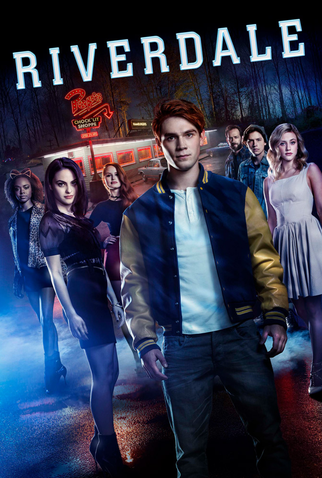
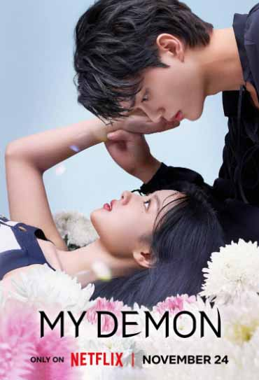
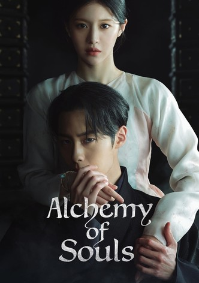

Para vingar a morte da mãe, um universitário entra para uma ordem secreta e acaba no meio de uma guerra entre lobisomens e adeptos das artes das trevas.

Enquanto tentam lidar com problemas típicos da adolescência como amor, sexo, escola e família, Archie e sua turma se envolvem em um grande mistério. Assista o quanto quiser. Essa versão da HQ da Archie Comics traz Molly Ringwald (Clube dos Cinco) e Luke Perry (Barrados no Baile).

Um demônio impiedoso perde os poderes depois de se envolver com uma poderosa herdeira. Mas é bem possível que ela seja a peça que faltava na vida dele
Em uma ilha onde há pobres e ricos, o jovem John B convoca os três melhores amigos para procurarem por um tesouro lendário ligado ao desaparecimento de seu pai

Uma poderosa feiticeira no corpo de uma mulher cega encontra um homem de uma família prestigiada que quer a ajuda dela para mudar o seu destino. Veja tudo o que quiser. Uma história mística escrita pela dupla Hong Jung-eun e Hong Mi-ran ("Hotel Del Luna"), com Jung So-min e Lee Jae-wook.